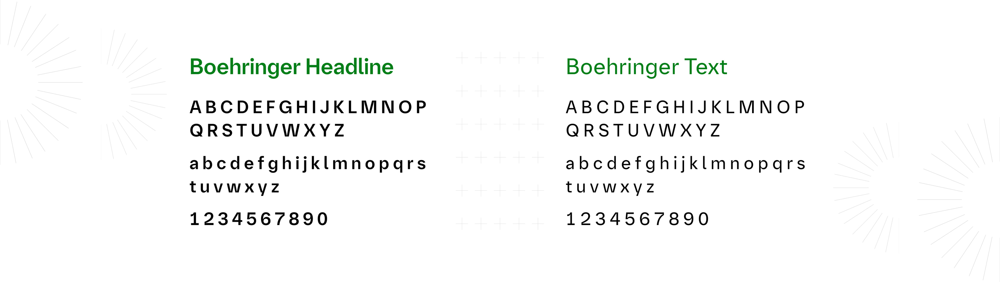
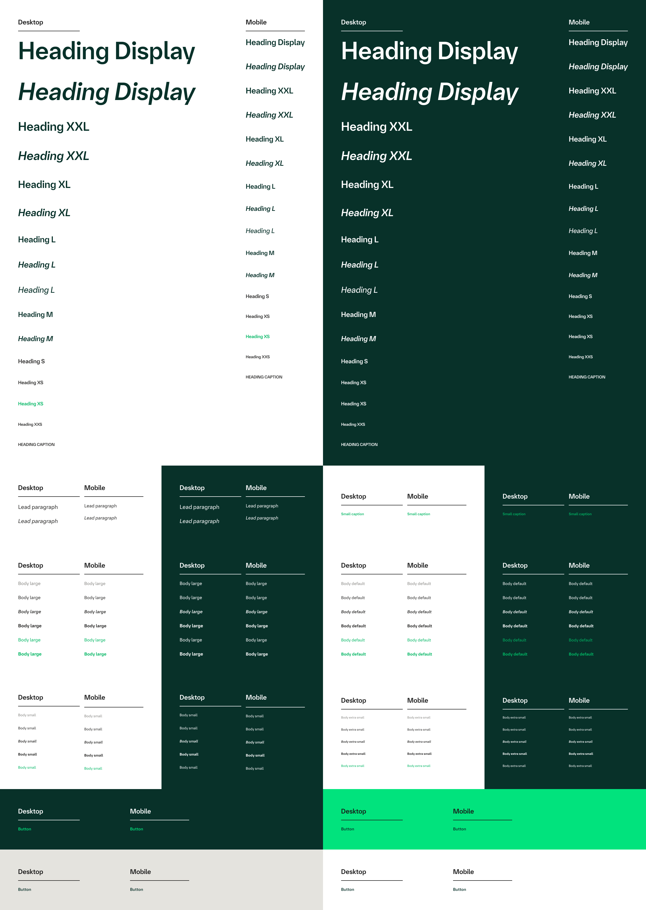

Project Overview
This project focuses on researching and defining a typography system for a new design system, intended for use across desktop and mobile platforms.
The goal was to create a scalable, readable, and consistent typographic foundation that supports complex content, improves usability, and enables efficient design-to-development workflows. Industry design systems and previous typography evaluations were used as reference inputs throughout the research.

Problem Statement
Boehringer Ingelheim’s digital products lacked a unified typography system across web and internal platforms, leading to inconsistent hierarchy, reduced readability for long-form medical content, accessibility risks, and increased effort for designers and developers during implementation.
Why Typography Is Critical in Pharma
- Long-form scientific and medical content
- High readability requirements for clinicians & patients
- Regulatory and accessibility compliance
- Global audiences with varied reading habits

Objectives
- Establish a clear typographic hierarchy
- Improve text readability across desktop and mobile
- Define scalable font sizes and spacing rules
- Align typography with design system best practices
- Support smooth developer handoff
Industry Research
To identify best practices, typography systems from established design systems were reviewed, including Material Design, Apple Human Interface Guidelines, and enterprise-level systems.
- Limiting font families improves consistency
- Clear separation between heading and body fonts strengthens hierarchy
- Line height significantly impacts readability
- Responsive typography requires device-specific adjustments
Typography Use Cases
Typography was evaluated across real UI scenarios:
- Page titles and section headings
- Long-form body content
- Buttons and call-to-action text
- Form labels, helper text, and validation messages
- Informational and instructional content
Each use case influenced font size, weight, and spacing decisions.
Font Selection
Font selection focused on legibility, clarity, and scalability.
Heading Font: Boehringer Headline: Page titles, section headers, key highlights
Body & UI Font: Boehringer Text Body content, buttons, labels, form fields, helper text

Typography Scale
The typography scale was built using a modular ratio (1.1, 1.2, 1.4) to maintain visual rhythm across headings, lead paragraph and body text. Line heights were adjusted based on text size to ensure optimal readability for long-form pharmaceutical content.

Line Height & Spacing - Desktop & Mobile
Headings:1.1x font size - Strong, compact appearance
Lead Paragraph:1.2x font size Balanced clarity
Body:1.4x font size Comfortable reading experience


What Achieved by Design
- A clear and reusable typography hierarchy
- Improved readability across devices
- Consistent spacing and visual rhythm
- A strong foundation for future design system components
Accessibility
- WCAG contrast considerations
- Minimum font sizes
- Line height benefits for readability
- Accessibility-first approach for healthcare users

Impact & Results
- Reduced ambiguity in heading usage
- Faster handoff between design and development
- Improved readability for long medical articles
- Consistent typography across multiple products

Final Thoughts
This project reinforced the importance of typography as a foundational system rather than a visual layer, especially in regulated industries like healthcare.